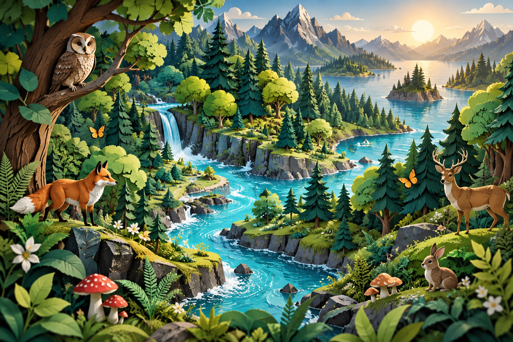

YOUR NEXT ADVENTUREGrade 7 · Unit 1 major
Master Quiz
All four ecology topics in one complete challenge. Your score appears after the first 10 answers, then updates with every answer: correct out of answered, plus a grade out of 100.
MISSION: UNDERSTAND A LIVING WORLDEcology
Ecology
Expedition.
Hey Yusuf. A whole world is connected.
Let’s find out how it works.
Both cover all 4 topicsScore reveal after 10 answersNo time pressure

FIELD SITE 01The connected forest
CHOOSE YOUR TRAIL
One ecosystem. Four big ideas.
Start anywhere. Explore them all.
LEARN BY DOING
Less guessing. More discovering.
Build a food chain, move energy through a pyramid, and follow nature’s cycles.